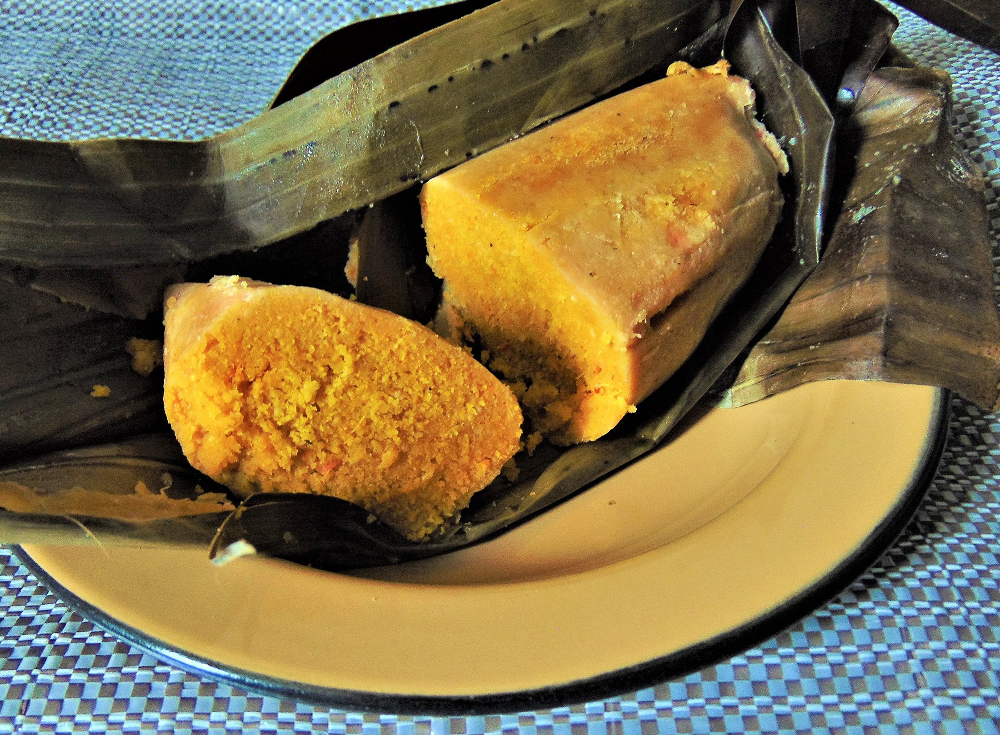
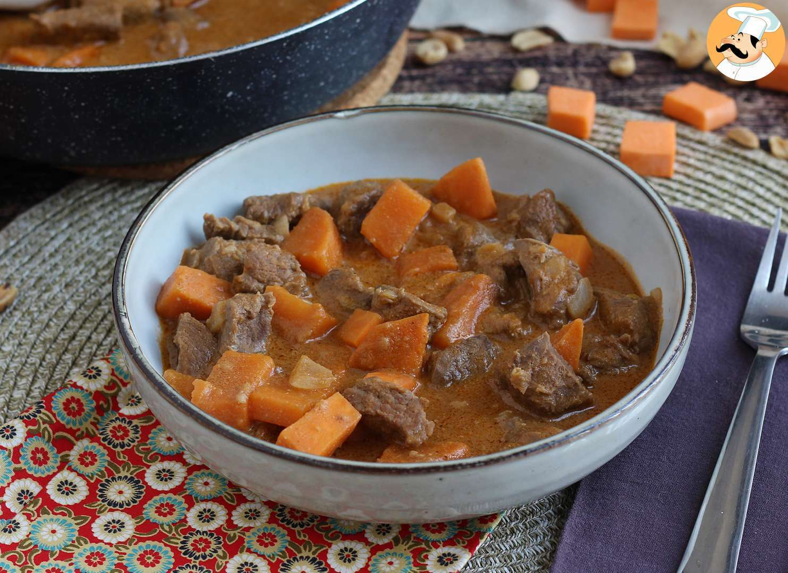
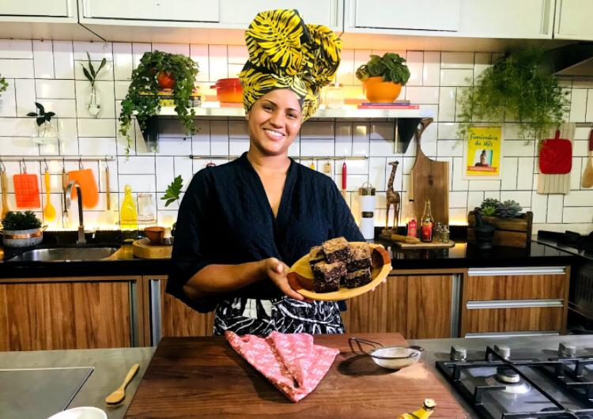

Moin-Moin
Na Nigéria, feijões e inhames de diferentes tipos, e com diferentes nomes locais, formam a sua grande base alimentar, que é acrescida de muitos complementos, como peixes secos, folhas e pimentas.
Pode-se dizer que o moin-moin é um tipo de pudim de feijão cozido no vapor. A massa do feijão-fradinho já moída, é temperada com cebola, pimenta vermelha, pimentão vermelho, noz-moscada; crayfisfh camarão de água doce seco e moído, gengibre, alho, sal, e óleo de girassol; tablete de caldo de carne; e, ovo cozido; sendo está a receita mais usual para se fazer o moin-moin. Ainda, a receita pode receber complementos como peixe cozido e carne moída de gado bovino refogada.

Mafe
O Mafé é um prato típico do Senegal, um país localizado na costa oeste da África. O nome do prato se refere ao molho que é feito com amendoim moído, cebola, alho, extrato de tomate e água. A carne, geralmente frango ou carneiro, é cozida separadamente e adicionada ao molho no final. Os vegetais também são cozidos separadamente e adicionados ao molho. Os vegetais mais comuns usados no Mafé são cenoura, batata, berinjela e quiabo. O prato é geralmente servido com arroz branco
Paulo-Rocha
O chef Paulo Rocha, nascido no Vale do Jequitinhonha, em Minas Gerais, inicialmente via uma carreira de sucesso na alta gastronomia como algo distante para pessoas negras. Influenciado por sua avó quituteira, que tinha uma barraca na feira, desenvolveu seu interesse pela confeitaria desde jovem. Atualmente, como chef desafiante no reality show Iron Chef (Netflix) e apresentador do programa Esse Doce Tem História no canal GNT, ele considera este o melhor momento de sua carreira. Rocha, agora uma referência, celebra poder inspirar jovens negros que aspiram a uma carreira na gastronomia, expressando o desejo de ser a referência que não teve quando começou na confeitaria.
A trajetória do entrevistado na gastronomia teve início com a influência da avó, uma quitandeira em Minas Gerais. Desde a infância, ele testemunhou a produção de pães e doces pela avó em uma barraca na feira. Ao se mudar para São Paulo na adolescência, aprendeu a cozinhar com o pai para se virar. Aos 15-16 anos, sentiu a vontade de trabalhar e conseguiu emprego em uma confeitaria popular por influência de um primo. Inicialmente como atendente, a oportunidade surgiu quando o antigo funcionário saiu, e o entrevistado passou a trabalhar na confeitaria, encontrando ali a resposta para suas dúvidas e preocupações sobre sua futura profissão. Durante cinco anos, ele atuou como auxiliar na confeitaria, relembrando as experiências de sua avó e consolidando sua paixão pela gastronomia.
João Diamante
O chef carioca João Diamante destaca sua missão de promover a inclusão social na gastronomia brasileira. Criador do projeto "Diamantes na Cozinha", uma "pós-graduação itinerante em cozinha brasileira", ele busca capacitar profissionais e transformar vidas por meio da culinária. Diamante enfatiza a importância do entendimento mútuo entre empregadores e funcionários, destacando a necessidade de valorizar e capacitar a mão de obra. Ele aborda o impacto da pandemia, evidenciando lições de adaptação e colaboração no setor gastronômico. Além disso, destaca a falta de representação de profissionais negros na gastronomia e a necessidade de ser "duas vezes mais" para conquistar visibilidade.

Chermoula
Aline Chermoula, chef de cozinha, pesquisadora da culinária da diáspora africana e professora de gastronomia, lançou um livro digital e interativo para crianças em São Paulo. Originária da Bahia, ela destaca a importância de incorporar uma alimentação saudável para as crianças em meio a estímulos externos de alimentos industrializados. O livro contém receitas fáceis com ingredientes africanos, histórias sobre esses alimentos e destaca a ancestralidade e o afeto envolvidos na culinária. A obra inspira iniciativas estudantis e coletivos gastronômicos focados na periferia e na ancestralidade negra. A chef destaca a contribuição significativa dos africanos para a cultura alimentar brasileira e a falta de valorização dessa influência. Aline Chermoula também é proprietária do ateliê Chermoula Cultura Culinária.